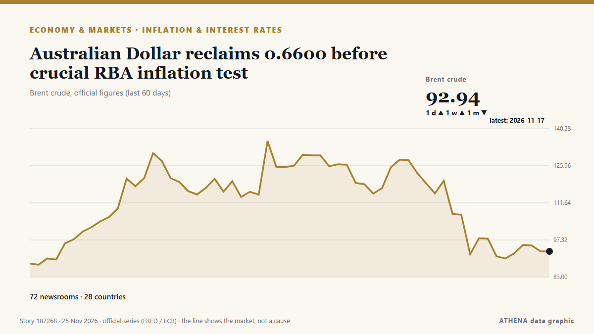

Οικονομία, Χρηματοοικονομικά & Αγορές
ΧορηγούμενοΠαρουσιάζεται από  Cybernetics and Artificial Intelligence Lab Welcome to the Cybernetics and Artificial Intelligence Laboratory, established at the Department of Business Administration of the National and Kapodistrian University of Athens. The lab is headed by Professor Dimitrios Thomakos. The lab aims to do research that can be published in top venues. Our research uses tools and methods of Artificial Intelligence, and lies in the following areas: - Forecasting - Decision making - Cyber security - Finance We are always looking forward to collaborating with exceptional students!
Cybernetics and Artificial Intelligence Lab Welcome to the Cybernetics and Artificial Intelligence Laboratory, established at the Department of Business Administration of the National and Kapodistrian University of Athens. The lab is headed by Professor Dimitrios Thomakos. The lab aims to do research that can be published in top venues. Our research uses tools and methods of Artificial Intelligence, and lies in the following areas: - Forecasting - Decision making - Cyber security - Finance We are always looking forward to collaborating with exceptional students!
Οι τίτλοι των ειδήσεων παρουσιάζονται στα αγγλικά, όπως δημοσιεύτηκαν.
Παρακολούθηση αγορών - επίσημα στοιχεία
Προς τα πού κινούνται τα επίσημα μεγέθη των αγορών - άνοδος, πτώση ή σταθερότητα - με την τελευταία επίσημη τιμή και την ημερομηνία της, και οι ειδήσεις αγορών που επιβεβαίωσε το ATHENA. Επίσημα στοιχεία, όχι τιμές σε πραγματικό χρόνο.
Ενέργεια
| 1 ημέρα | 1 εβδομάδα | 1 μήνας | Επίσημη τιμή | |
|---|---|---|---|---|
| Πετρέλαιο Brent | ▬ | ▲ | ▼ | $92,94/bblΕπίσημα στοιχεία της 17 Νοε 2026 |
| Πετρέλαιο WTI | ▲ | ▼ | ▼ | $89,53/bblΕπίσημα στοιχεία της 17 Νοε 2026 |
| Φυσικό αέριο ΗΠΑ (Henry Hub) | ▼ | ▲ | ▼ | $3,10/MMBtuΕπίσημα στοιχεία της 17 Νοε 2026 |
| Ευρωπαϊκό φυσικό αέριο (1 μήνας · 3 μήνες · 12 μήνες)(1Μ · 3Μ · 12Μ) | ▲ | ▲ | ▲ | $25,49/MMBtuΕπίσημα στοιχεία της 1 Σεπ 2026 |
| Άνθρακας (Αυστραλία) (1 μήνας · 3 μήνες · 12 μήνες)(1Μ · 3Μ · 12Μ) | ▲ | ▲ | ▲ | $153,84/tΕπίσημα στοιχεία της 1 Σεπ 2026 |
Τρόφιμα
| 1 μήνας | 3 μήνες | 12 μήνες | Επίσημη τιμή | |
|---|---|---|---|---|
| Σιτάρι | ▲ | ▲ | ▲ | $246,85/tΕπίσημα στοιχεία της 1 Σεπ 2026 |
Χρηματιστήρια ΗΠΑ
| 1 ημέρα | 1 εβδομάδα | 1 μήνας | Επίσημη τιμή | |
|---|---|---|---|---|
| S&P 500 | ▲ | ▼ | ▼ | Ασυνήθιστη κίνηση Μόνο κατεύθυνση (δείκτης © Cboe)Επίσημα στοιχεία της 23 Νοε 2026 |
| Nasdaq Composite | ▼ | ▼ | ▼ | Μόνο κατεύθυνση (δείκτης © Cboe)Επίσημα στοιχεία της 24 Νοε 2026 |
Επιτόκια, κίνδυνος και δολάριο
| 1 ημέρα | 1 εβδομάδα | 1 μήνας | Επίσημη τιμή | |
|---|---|---|---|---|
| Απόδοση 10ετούς ομολόγου ΗΠΑ | ▬ | ▼ | ▼ | 4,92 %Επίσημα στοιχεία της 23 Νοε 2026 |
| Μεταβλητότητα αγοράς (VIX) | ▼ | ▲ | ▲ | Ασυνήθιστη κίνηση Μόνο κατεύθυνση (δείκτης © Cboe)Επίσημα στοιχεία της 23 Νοε 2026 |
| Δολάριο ΗΠΑ, ευρύς δείκτης | ▬ | ▲ | ▲ | 123,60Επίσημα στοιχεία της 20 Νοε 2026 |
Το ευρώ έναντι άλλων νομισμάτων
| 1 ημέρα | 1 εβδομάδα | 1 μήνας | Επίσημη τιμή | |
|---|---|---|---|---|
| EUR/USD | ▲ | ▼ | ▼ | 1,0963 USDΕπίσημα στοιχεία της 24 Νοε 2026 |
| EUR/GBP | ▬ | ▲ | ▼ | 0,8370 GBPΕπίσημα στοιχεία της 24 Νοε 2026 |
| EUR/CHF | ▬ | ▼ | ▼ | 0,9183 CHFΕπίσημα στοιχεία της 24 Νοε 2026 |
| EUR/JPY | ▲ | ▼ | ▼ | 174,39 JPYΕπίσημα στοιχεία της 24 Νοε 2026 |
| EUR/CNY | ▲ | ▼ | ▼ | 7,3063 CNYΕπίσημα στοιχεία της 24 Νοε 2026 |
| EUR/TRY | ▲ | ▲ | ▼ | 55,503 TRYΕπίσημα στοιχεία της 24 Νοε 2026 |
| EUR/NOK | ▬ | ▲ | ▲ | 10,7350 NOKΕπίσημα στοιχεία της 24 Νοε 2026 |
Πηγές: Υπηρεσία Ενεργειακών Πληροφοριών ΗΠΑ (πετρέλαιο, φυσικό αέριο ΗΠΑ), ΔΝΤ (ευρωπαϊκό φυσικό αέριο, άνθρακας, σιτάρι), Υπουργείο Οικονομικών και Federal Reserve των ΗΠΑ (απόδοση 10ετούς, δείκτης δολαρίου) και Cboe (VIX), S&P Dow Jones Indices (S&P 500), Nasdaq (Nasdaq Composite), μέσω FRED (Federal Reserve Bank of St. Louis)· ισοτιμίες αναφοράς του ευρώ © Ευρωπαϊκή Κεντρική Τράπεζα. Οι τιμές είναι οι τελευταίες επίσημες, με την ημερομηνία τους - όχι τιμές σε πραγματικό χρόνο. Τις κατευθύνσεις τις υπολογίζει το ATHENA.
Κρυπτονομίσματα, ETF και μετοχές στις ειδήσεις
- AI trust crisis exposes cracks in Korea's stock market Κίνδυνος 3.1 25 Νοε
- Asian stocks fall as AI trade falters Κίνδυνος 1.2 25 Νοε
- Anthropic falls below $83 IPO price in swift reversal after record listing Κίνδυνος 2.9 24 Νοε
- European shares end lower as tech rally fades; Sanofi gains Κίνδυνος 0.0 24 Νοε
- AI rout deepens, keeping Indian rupee rally alive on foreign equity buying Κίνδυνος 2.5 24 Νοε
- Anthropic CEO Dario Amodei Sold $280 Million In Shares As Part Of Record IPO Κίνδυνος 1.0 24 Νοε
- Tokyo stocks surge as Nvidia CEO's return sparks buying Κίνδυνος 0.0 24 Νοε
- Europe’s Stoxx 600 rises as tech shares rebound after AI-driven rout Κίνδυνος 1.4 24 Νοε
- Anthropic’s Record IPO Raises Hopes for a Charitable Windfall That Has Nonprofits Preparing to Scale Κίνδυνος 0.0 24 Νοε
- Morgan Stanley gives Greek stocks a vote of confidence for 2027: Its top picks revealed Κίνδυνος 0.8 24 Νοε

Πληθωρισμός & επιτόκιαAustralian Dollar reclaims 0.6600 before crucial RBA inflation test
The Aussie Dollar registered modest gains against the Greenback on Tuesday, up about 0.20%, as the pair reclaimed the 0.6600 level amid US Dollar weakness following solid US data, ahead of the… από FXStreet
| 12 Νοε | 113 |
|---|---|
| 13 Νοε | 71 |
| 14 Νοε | 39 |
| 15 Νοε | 64 |
| 16 Νοε | 127 |
| 17 Νοε | 101 |
| 18 Νοε | 105 |
| 19 Νοε | 110 |
| 20 Νοε | 79 |
| 21 Νοε | 37 |
| 22 Νοε | 46 |
| 23 Νοε | 110 |
| 24 Νοε | 57 |
| 25 Νοε | 3 |
We skipped our usual Thanksgiving dinner for a family getaway. My kids didn't miss a thing.
I was tired of cooking Thanksgiving dinner, so my family took a trip to Key West instead. από Business Insider
Charlie Cox, 43, says he was rejected for James Bond as 'too old' before Robert Pattinson, 40, was cast
Daredevil actor Charlie Cox has said he was turned down for the role of James Bond because he was "too old," days after Robert Pattinson, 40, was announced as the next 007. από Gulf News
Israeli Developer Simon Aykut Freed on Health Grounds After Transfer from Cyprus
Simon Aykut, the Israeli developer convicted of usurping Greek Cypriot property in the occupied north, has been released by Israel on health grounds, drawing a response from President Christodoulides. από Greek City Times
US seeks to recover more than €900m from Binance hack
One of history’s largest crypto hacks triggers sweeping US action to reclaim stolen Binance funds. από Luxembourg Times
South African rand gains as commodity prices rise and dollar weakens
The South African rand strengthened on Monday, supported by firmer commodity prices and a weaker US dollar, which came under pressure after a Federal Reserve Governor said that the central bank’s… από Club of Mozambique
Merger of Dubai’s top Islamic banks comes a step closer
Dubai Islamic Bank may be about to make a bid for Emirates Islamic Bank, the sharia-compliant subsidiary of Emirates NBD. από AGBI
As Guru Nanak Prakash Purab is celebrated tomorrow, a curious question about dates
Prime Minister Narendra Modi participated in a Shabad Kirtan at Delhi Raj Niwas on the eve of Guru Nanak Dev's birth anniversary. από Times of India
Iranian rial hits record low after fresh US sanctions target financial network
The Iranian rial fell to a record low against the US dollar on Tuesday, a day after Washington announced fresh sanctions targeting the financial networks Iran uses to access foreign currency, Anadolu… από Middle East Monitor
Netanyahu Welcomes Reported Reinstatement of Nvidia Founder Jensen Huang as CEO
Israeli caretaker Prime Minister Benjamin Netanyahu welcomed Nvidia’s reported decision Monday to reinstate its founder, Jensen Huang, as chief executive officer, despite ongoing investigations into… από Middle East Monitor
Final mile delivery prices climb 10.5% in Q3, GEODIS says
Courier and local freight prices rose 10.2% and 10.7% in the third quarter, according to a new GEODIS index, against a 3.5% rise in consumer prices over the same period. από FreightWaves
OPEC Fund to provide Sri Lanka with $30 million loan for reforms
Sri Lanka is set to receive a US$30 million policy-based loan from the OPEC Fund for International Development to support its economic reforms and recovery programme. από Daily Mirror
Trump: Illegal for Deutsche Bank to leak tax records
United States President Donald Trump told reporters on Tuesday that it was "illegal" for Deutsche Bank to leak his tax records, shortly after the institution distanced itself from the 2017 breach. από AzerNews
US lawmaker calls situation in West Bank ‘horrific'
Joaquin Castro sponsors Stop the Settlements Act to hold settlers, companies financially accountable for supporting settlement activity in West Bank, Gaza. από Anadolu Agency (English)
10 best gifts for foodies
Score a great gift for everyone on your list without breaking the bank. από Wired
Anthropic CEO Dario Amodei Sold $280 Million In Shares As Part Of Record IPO
The billionaire Anthropic CEO’s sister and fellow co-founder, Daniela Amodei, also disclosed an identical stock sale in a regulatory filing on Monday. από Forbes Business
Ukraine aid expected to cost next EU budget 55 billion euros in interest payments alone
It is not yet known how exactly the 55.4 billion euros will be paid. από Kyiv Independent
AO World lowers profit outlook as under-pressure shoppers cut back
The Bolton-based firm had said in June that it was on track to meet 2026-27 profit forecasts. από The Irish News (Belfast)
NBC strengthen commitment to finance mining sector, empower small-scale miners
DAR ES SALAAM: The National Bank of Commerce (NBC) has committed to expanding financial support across Tanzania’s mining sector, with particular emphasis on improving small-scale miners’ access to… από Daily News
Israeli army raids Palestinian refugee camp, launches arrest campaign in occupied West Bank
Army forces turn child center in Al-Amari refugee camp into interrogation site for detainees, local sources say. από Anadolu Agency (English)
ASEAN+3 nations to discuss regional financial cooperation
SEOUL, Nov. 24 (Yonhap) -- Vice finance ministers and deputy central bankers of ... από Yonhap (English)
Eight weeks of part-time work for €3k up for grabs as Census 2027 jobs open
The CSO is hiring field support officers who will replace the traditional census enumerator role. από TheJournal.ie
Rats will keep away from sheds in winter if UK households carry out three key tasks in November
Garden sheds can be the perfect winter hideaway for rats, but three expert-recommended steps could help prevent these unwanted pests from nesting before the colder weather sets in. από Manchester Evening News
Malaysia set to hold rates on strong growth, signal hike in 2027
Inflation in Malaysia remain moderate, despite a surge in global oil prices. από The Business Times
Two bank executives and company nominee jailed over fake tax refund scheme
Bank branch manager in eastern Attica denies wrongdoing in testimony – Nine other suspects, including accountants alleged to have played a central role in the operation, are expected to give evidence… από ProtoThema English
(LEAD) SK hynix's U.S.-traded shares surge over 20 pct in Mon. morning trading after Nvidia CEO's reinstatement
WASHINGTON, Nov. 23 (Yonhap) -- U.S.-traded shares of South Korean chipmaker SK ... από Yonhap (English)
Busisa Moyo backs Highlanders’ “US$10 Fan Revolution”, need for accountability …emotional attachment alone cannot guarantee financial stability
Limukani Ncube, Intake Editor BULAWAYO business executive Busisa Moyo has thrown his weight behind calls for Highlanders supporters to take greater financial… από The Herald
Lucy Powell promotes UK education in China despite risks
The U.K. education secretary's visit to Beijing comes days after Wes Streeting praised the government for stepping up its interaction with China. από Politico Europe
Trump to welcome investors at gala for his plunging meme coin
President Donald Trump will host a gala for investors of the $TRUMP meme coin, which has seen its value plummet from approximately $75 to under $1 in 20 months. από Arab News
Russian fintech A7 presented it’s cross-border payment platform at Megacampus Summit in Dubai
The platform offers international business payments at 0.3% fees, with recipients receiving funds directly into conventional bank accounts. από Arabian Business
Shoppers rush to buy gold
Sharp price drop drives demand for jewellery and gold bars. από News of Bahrain
Cold weather threatens Europe's already strained gas reserves
Forecasts of a sharp drop in temperatures across Europe have triggered a rapid increase in natural gas prices. από AzerNews
IEA warns copper and mineral supply shortages threaten grid expansion
The International Energy Agency (IEA) in the World Energy Outlook 2026 (WEO-2026) report said that planned power grid expansion will require copper and equipment already in tight supply, while… από Mining Technology
Japanese Yen strengths as inflation data reaffirms BoJ rate hike bets
The USD/JPY pair edges lower during the Asian session on Friday following the release of Japan's consumer inflation figures, which lifts Bank of Japan (BoJ) rate hike bets and underpins the Japanese… από FXStreet
Kipit Asset Management Appoints Mr. Luke Ofojebe, CFA, as Acting Managing Director
As part of its strategic positioning, Kipit Asset Management Limited (formerly Fortuna Capital Limited), a Securities and Exchange Commission (SEC) licensed Fund & Portfolio Management Company, has… από Vanguard